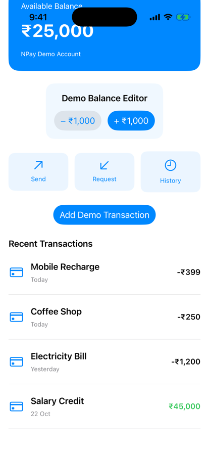

Unit 02 · Lesson 2.10
ForEach, List &
Collection Identity
NPay shows 100 transactions. One is inserted. How does SwiftUI know which row is which?
Lesson 2.10 · Outcomes
By the end, you will be able to explain
Why a for loop won’t work; what ForEach is
Identifiable and stable IDs
Position vs identity: what indices get wrong
Why var id: UUID { UUID() } is a bug
ForEach vs List; eager vs lazy
NPay’s first transaction history
Lesson 2.10 · Where we are
Today: transaction history
Unit 02 · SwiftUI Fundamentals
Part 1
Transaction history
Many rows, one screen
Part 1 · Our next NPay milestone (section 1)
Milestone 2.10: recent transactions
- Recent Transactions below the actions
- Mock data first, then dynamic
- Coffee Shop −₹250
- Electricity Bill −₹1,200
- Salary Credit +₹45,000

Before: 2.9

After, scrolled down

+ Add Demo Transaction
Part 2
ForEach
A view for a collection
Part 2 · Display a Swift array (section 2)
Not for: ForEach
VStack {
for transaction in transactions {
Text(transaction)
}
}swiftc, iOS 26.5 SDK
VStack {
ForEach(transactions, id: \.self) { transaction in
Text(transaction)
}
}- Each element needs an identity
- Unique strings can be their own ID
- Duplicates or changes: trouble (Part 5)
Part 2 · What exactly is ForEach? (section 3)
A generic view: Data, ID, Content
// iOS 26.5 SDK (excerpts)
public struct ForEach<Data, ID, Content>
where Data : RandomAccessCollection, ID : Hashable
extension ForEach : View where Content : View
extension ForEach where ID == Data.Element.ID,
Content : View, Data.Element : Identifiable {
public init(_ data: Data,
@ViewBuilder content: @escaping (Data.Element) -> Content)
}- Data: the collection
- ID: the identity,
Hashable - Content: the view per element
ForEach<Array<String>, String, Text>
ForEach<Array<Transaction>, UUID,
TransactionRow>
- A view describing child views and their identities
Part 2 · How ForEach creates child views (section 4) · conceptual
Array in, identified views out
- SwiftUI may run content closures selectively: the container decides (Part 6)
Part 3
Transaction and Identifiable
Identity is part of the model
Part 3 · Transaction and Identifiable (sections 5–6)
Identity belongs to the transaction
struct Transaction: Identifiable {
let id: UUID
let title: String
let amount: Int
let date: String
}
ForEach(transactions) { transaction in // no id: needed
Text(transaction.title)
}- Same title, amount and date can happen twice
- Identity = the transaction, not its display
- A Swift protocol: has an
id - ForEach uses it: no
id: \.id
- No: the model must provide a suitable ID
- Ours stores one
Part 4
Stable identity
Position is not identity
Part 4 · Stable identity (sections 7–8, 15)
Coffee Shop moved; it’s still TXN-101
Before
| Index | ID | Title |
|---|---|---|
| 0 | TXN-101 | Coffee Shop |
| 1 | TXN-102 | Electricity Bill |
| 2 | TXN-103 | Salary Credit |
After inserting at 0
| Index | ID | Title |
|---|---|---|
| 0 | TXN-104 | Mobile Recharge |
| 1 | TXN-101 | Coffee Shop |
| 2 | TXN-102 | Electricity Bill |
| 3 | TXN-103 | Salary Credit |
- Positions: every row below shifted by one
- Identities: unchanged; one new ID appeared
- SwiftUI’s exact diffing isn’t public; stable identity is the requirement
Part 4 · When a transaction arrives (section 14) · conceptual
Insert one; the rest keep their identity
- Identity keeps row state attached
- It doesn’t promise a row’s
bodynever runs
Part 5
When identity breaks
Indices and computed UUIDs
Part 5 · Stable ID, index, computed UUID (sections 9–10, 15–16)
Flag Coffee Shop, then insert at the top
// FlagRow has @State private var flagged = false
ForEach(items) { FlagRow(title: $0.title) } // 1
ForEach(items.indices, id: \.self) { i in // 2
FlagRow(title: items[i].title) }
// 3: same as 1, but var id: UUID { UUID() }
1 Stable id: flag stays on Coffee Shop

2 Index: flag jumps to Mobile Recharge

3 Computed UUID: flag lost
Part 5 · What the rows reported (sections 9–10, 16)
Who is flagged after the insert?
row Mobile Recharge: flagged = false
(only the new row’s body ran)
row Mobile Recharge: flagged = true
row Coffee Shop: flagged = false
…
row Mobile Recharge: flagged = false
row Coffee Shop: flagged = false
… all rows fresh
computed: id == id → false
stored: id == id → true
- Dynamic domain data: stable domain IDs
- From the API, not the index or a fresh UUID
- Indices for presentation only
Part 6
ForEach vs List
And eager vs lazy
Part 6 · ForEach versus List (sections 11, 17)
And which rows actually get built
| ForEach | List | |
|---|---|---|
| Role | generates child view descriptions | presents a list interface |
| Scrolling | not by itself | built in |
| Row styling | decided by the parent | list-specific |
| Editing | depends on the parent | built-in capabilities |
| Identity | important | important |
ScrollView { VStack { ForEach } }: 1000
ScrollView { LazyVStack { ForEach } }: 12
List: 9
- ForEach doesn’t decide laziness
- The container does: eager VStack, lazy List / LazyVStack
Part 7
NPay’s transaction history
Milestone 2.10
Part 7 · A reusable TransactionRow (section 12)
Everything from 2.1–2.9 in one row
struct TransactionRow: View {
let transaction: Transaction
var body: some View {
HStack(spacing: 12) {
Image(systemName: "creditcard")
.font(.title2).foregroundStyle(.blue)
VStack(alignment: .leading, spacing: 4) {
Text(transaction.title).font(.headline)
Text(transaction.date).font(.caption)
.foregroundStyle(.secondary)
}
Spacer()
Text(transaction.amount, format: .currency(code: "INR")
.precision(.fractionLength(0)))
.font(.subheadline.bold())
.foregroundStyle(transaction.amount >= 0
? Color.green : Color.primary)
}
.padding(.vertical, 8)
}
}- HStack and VStack
- Spacer before the amount
- Currency format
- Conditional colour
- A custom view
Part 7 · Make it dynamic (sections 13, 18–20)
TransactionHistory and Add Demo Transaction
struct TransactionHistory: View {
let transactions: [Transaction] // display only
var body: some View {
VStack(alignment: .leading, spacing: 12) {
Text("Recent Transactions").font(.headline)
ForEach(transactions) { transaction in
TransactionRow(transaction: transaction)
Divider()
}
}
}
}
// ContentView: @State transactions, then
Button("Add Demo Transaction") { addDemoTransaction() }
// inserts Mobile Recharge (-399) at index 0
TransactionHistory(transactions: transactions)Three rows
After Add: Mobile Recharge on top
Part 8
Observe updates
And the architecture so far
Part 8 · Observe row updates; checkpoint (sections 21, 23)
One insert, one new row evaluated
var body: some View {
let _ = Self._printChanges()
return HStack {
Text(transaction.title)
Spacer()
Text("\(transaction.amount)")
}
}ChangesRow: @self changed. ×3 (launch)
ChangesRow: @self changed. ×1 (the new row)
ContentView
├── @State balance
├── @State transactions
├── BalanceCard let balance: Int
├── BalanceEditor @Binding balance
├── QuickAction × 3 action: () -> Void
└── TransactionHistory let transactions
└── ForEach(transactions)
└── TransactionRow- Use diagnostics to understand, not to panic
- Evaluation ≠ destroyed ≠ redrawn
Lesson 2.10 · Recap
What to remember
ForEach = views + identities
a view, not a for loop
Identity ≠ position
stable IDs; never indices or fresh UUIDs
The container decides
VStack eager; List, LazyVStack lazy
Review
Check your understanding
Check your understanding · 1 of 8
What does ForEach need to track dynamic elements correctly?
- Stable identity
- Only the array index
- A separate thread
With stable IDs the flag stayed on Coffee Shop after the insert.
Common trap: Using position as identity.
Check your understanding · 2 of 8
Which of these provides scrolling by itself?
ForEachList- Both
ForEach only generates children; List is a scrolling list container.
Common trap: Treating ForEach as a list.
Check your understanding · 3 of 8
Is a computed id that returns UUID() on every access safe?
Two reads gave two IDs; in the list the flag was lost after one insert.
Common trap: Thinking any UUID is a stable ID.
Check your understanding · 4 of 8
What decides whether 1,000 rows are built eagerly or lazily?
ForEach- The surrounding container
Identifiable
VStack built 1,000 row bodies; LazyVStack 12; List 9.
Common trap: Assuming ForEach is lazy.
Check your understanding · 5 of 8
Should a read-only TransactionHistory own an independent copy of mutable transaction state?
The parent owns it; the history takes let transactions.
Common trap: Duplicating state in children (2.9).
Check your understanding · 6 of 8
Does stable identity guarantee that a row’s body never runs again?
Identity keeps state attached; evaluation is a separate concern.
Common trap: Confusing identity with evaluation.
Check your understanding · 7 of 8
ForEach(items.indices, id: \.self). You flag Coffee Shop (index 0), then insert Mobile Recharge at index 0. Which row shows the flag?
- Coffee Shop
- Mobile Recharge
- None
The state stayed with index 0, which is now Mobile Recharge.
Common trap: Assuming the flag follows the transaction.
Check your understanding · 8 of 8
From Lesson 2.9: what should a child that only displays the balance receive?
- A
Binding<Int> - A plain value
- Its own
@Statecopy
Give only the access needed; TransactionHistory follows the same rule.
Common trap: Handing out bindings by default.
Lesson 2.10 · Where this goes next
Where this goes next
| Lesson | Topic | Builds on today |
|---|---|---|
| 2.11 | TextField, input validation & focus | a payment amount: keyboard → binding → state |
| Later | Connecting it up | transactions that change the balance |
Lesson 2.10 · Lab
Break identity on purpose
Predict first, then run.
- Try a
forloop in a VStack; read the error. - Build Transaction, TransactionRow, TransactionHistory.
- Add a
@Stateflag to the row; flag one; insert at 0. - Switch to
indices, then to a computedUUID(). - Add
_printChangesto the row; tap Add. - Try 1,000 rows in VStack, LazyVStack, List.
- Three screenshots of the flag experiment
- One sentence: position vs identity
- Your row-body counts
Lesson 2.10 complete
ForEach, List &
Collection Identity
Next: Lesson 2.11 — TextField, Input Validation & Focus